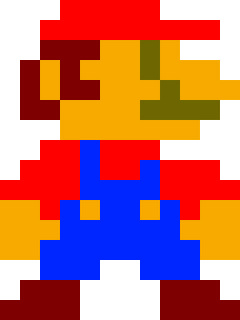

Your browser doesn't support the features required by impress.js, so you are presented with a simplified
version of this presentation.
For the best experience please use the latest Chrome, Safari or Firefox browser.
Garbage Collector
и управление памятью
в HotSpot JVM
Теория поколений и GC
Теория поколений и GC
Умершие очень быстро
Средняя продолжительность жизни
Долгоживущие объекты
Очевидное разделение памяти
Young Generation
Old Generation

Особенности Young Gen
Аллокация объектов
Быстрое заполнение
Частая сборка мусора
Более быстрая сборка чем в Old Gen
Как правило, меньше по размеру чем Old Gen
Живых объектов на много меньше, чем мусора
Особенности Old Gen
Новые объекты приходят из Yong Gen (promotion)
Порог входа по достижению определенного возраста
Редкая сборка мусора
Сборка более медленная и сложнее чем в Yong Gen
Размер поколений Heap и PermGen

Permanent Generation в HotSpot JVM
PermGen содержит в себе:
Метаданные классов
Сами классы
Интернированные строки(строковой пул)
java.lang.OutOfMemoryError: PermGen space
Возможные причины:
Библиотеки явно генерирующие байткод(загрузка новых классов)
Библиотеки неявно генерирующие байткод(Hibernate, Spring, AspectJ)
Java Reflection API
Serialization и RMI используют рефлексию
Groovy замыкания
Переполнения строкового пула
Groovy closure
def hello = {name -> println "Hello $name!"}
names = ['Alex', 'Bill', 'Jon']
names.each { hello(it) }
/*
Hello Alex!
Hello Bill!
Hello Jon!
*/
Groovy замыкания - это круто!

Но в результате будут созданы несколько классов в
Permanent Generation!
Строковый пул, на заметку
Как можно сравнить две строки?
public class StringInternTest {
public static void main(String[] args) {
//Аллоцируется в PermGen
String a = "string";
//аллоцируется в Heap
StringBuilder b = new StringBuilder("str").append("ing");
//дорогая операция
System.out.println(a.equals(c));// true
String c = b.toString();
System.out.println(a==c);// false
//быстрая операция
System.out.println(a==c.intern());// true
}
}
далее >